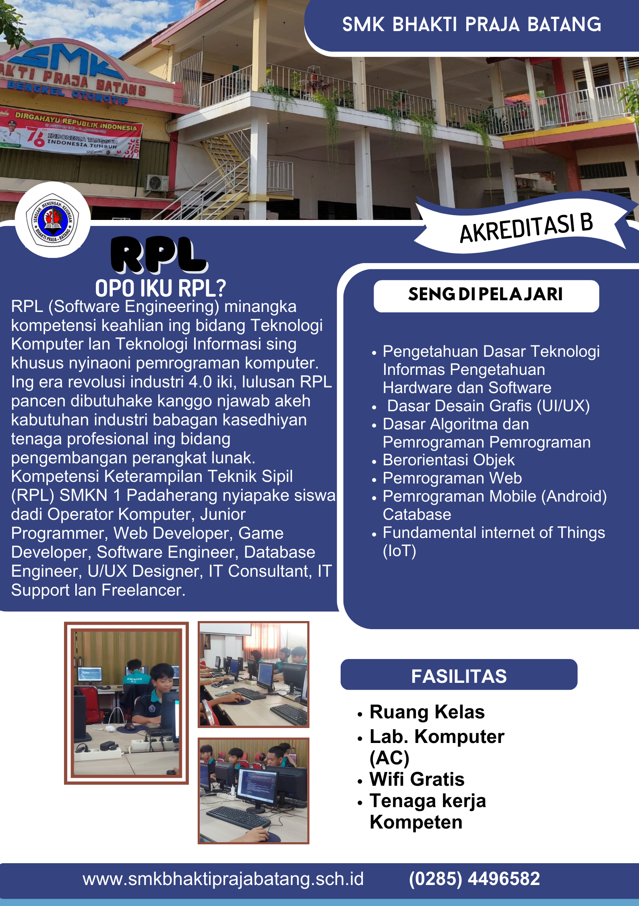
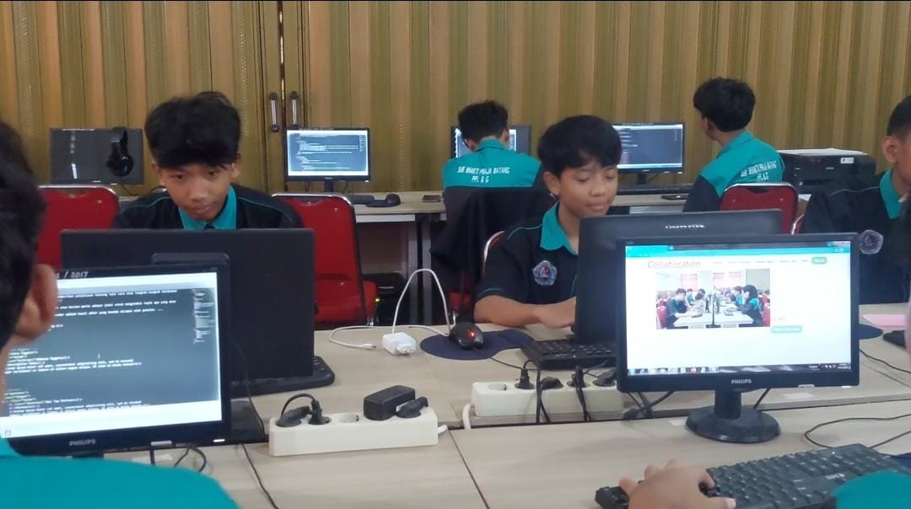
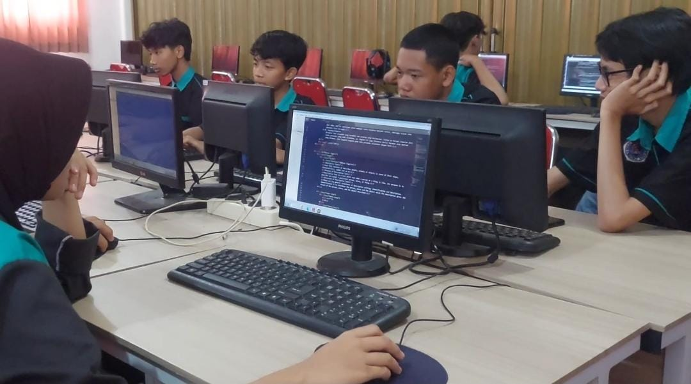
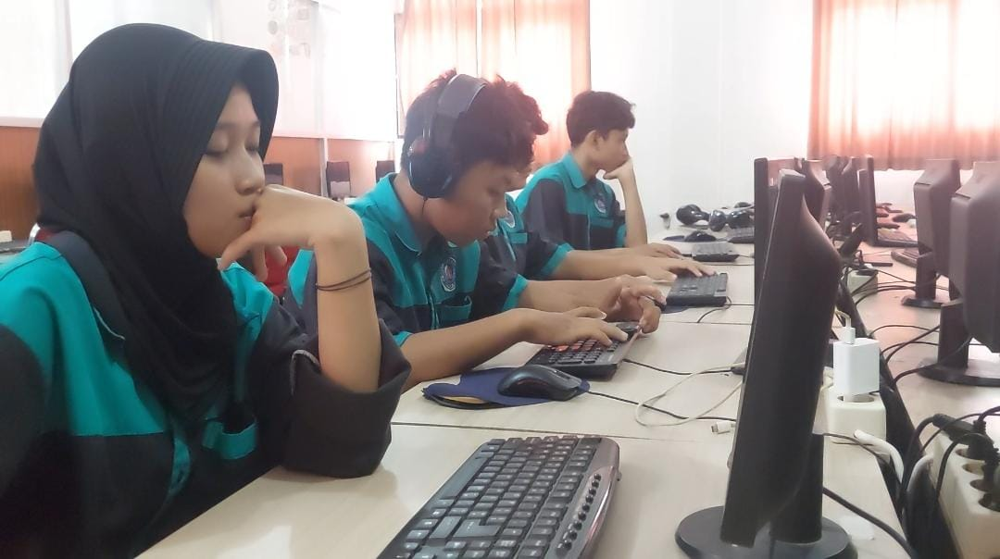
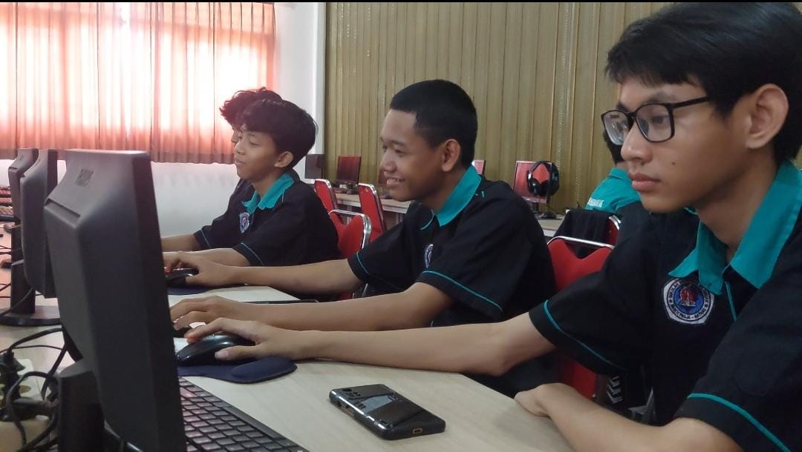
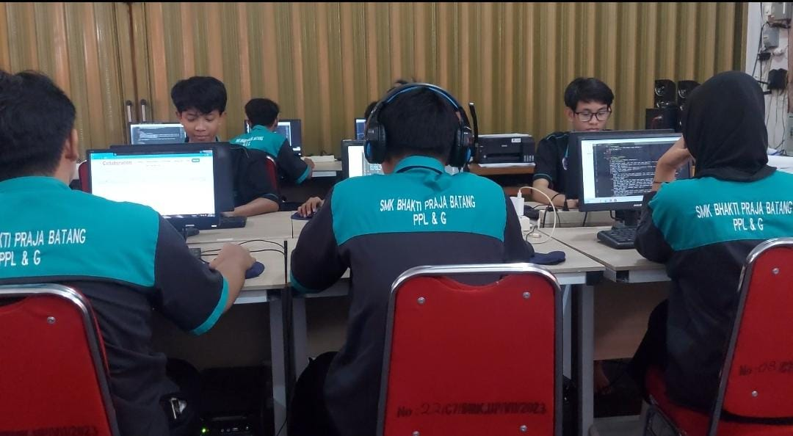
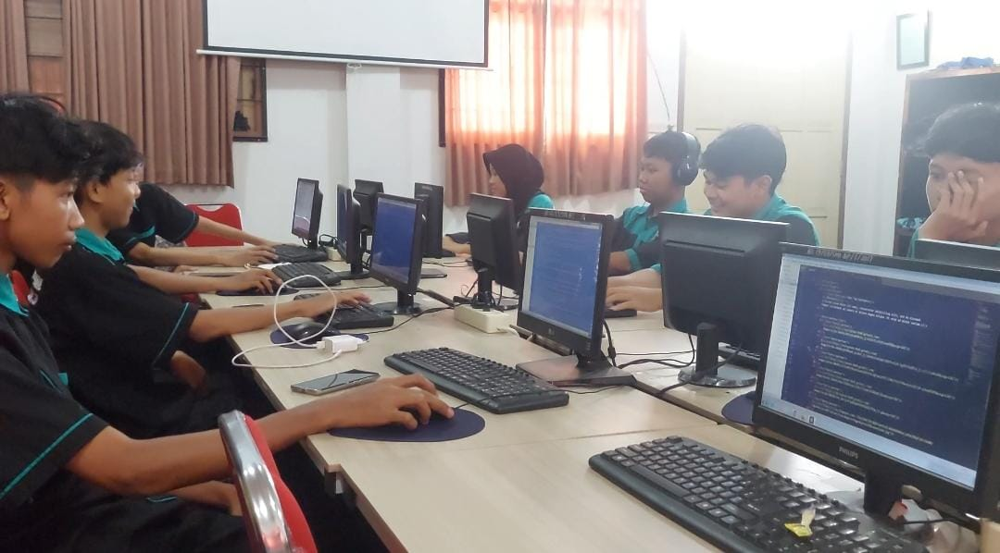

Pariwara/Iklan ya iku wujud sesambungan kang duwé maksud kanggo mènèhi greget wong tetuku, nawakaké sawijining barang utawa tenaga, kanggo merbawani panemuné wong akèh, narik panyengkuyunging wong akèh amrih pikir lan tumindaké laras karo kekarepané sing masang pariwara. Jinising iklan/ pariwara ya iku :
Iklan komersial ya iku pariwara kang tujuané nawakaké barang (produk). Tuladhané : iklan sabun, iklan shampo, iklan sepatu, lsp.
Iklan leladi jasa masarakat iku pariwara kang nawakaké babagan sosial, tujuané ngedol gagasan kanggo leladi marang masarakat. Lumrahé pariwara iki isi pangajak kanggo nindakaké utawa malah ngedohi pakarti. Masarakat diajak nindakaké pakarti kang becik lan ngedohi pakarti kang ora becik.
Iklan kulawarga racaké awujud ucapan wisuda, ucapan palakrama, ucapan bela sungkawa, lsp.
Iklan keséhatan racaké ngelingkaké bebrayan ing babagan keséhatan, umpamané posyandu, 3 M, KB, lsp.
"Cerkak (Cerita Cekak/Cerita Pendek) yaiku gancaran sing ngandharake sarining kedadean utawa lelakon saka awal nganti pungkasan kanthi cekak wae. Cerita iki nduwenani isi ingkang ringkes, padet, lan sakedhik alur caritane.
Unsur Intrinsik (Tema, Latar (Tempat, waktu, Keadaan), Alur (Maju, Mundur, Campur), Tokoh Penokohan, Sudut Pandang, Pesan Moral.
Unsur Ekstrinsik (Nilai agama budaya politik ekonomi, latar belakang uripane pengarang, keadaan sosial pas cerita iku diciptakae)
| Aksara Jawa | |
| Arti | "Lunga nandaake bakal ana sing teka" |
| Makna | "Pergi menandakan akan ada yang datang" |
|  |  |  |
|  |  |  |